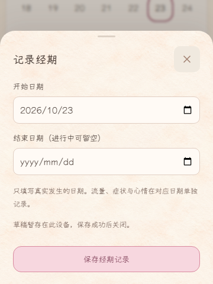
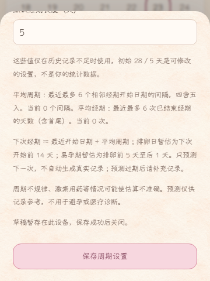
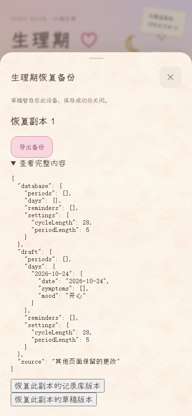
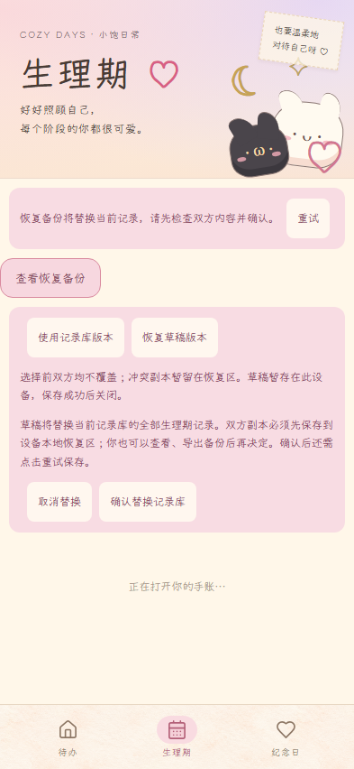
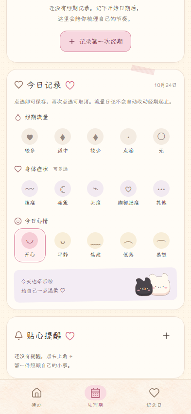

生理期 · 功能验收证据
打开应用，点击底部「生理期」
以下为源提交 88fa1b7f313410cb16fcf124015452314889ea44 对应的 Playwright 真实 UI 截图，使用独立浏览器上下文和合成数据。截图用于功能与恢复状态核对，不代表设计参考图视觉验收。
本轮：生理期 45、纪念日 35、原回归 17、Pages 4、恢复证据 1 通过；两个构建和 npm ci 均 exit 0。验证记录与截图 SHA-256。未做 Android 真机或 M3/M4 视觉素材验收。
1 · 生理期首页 2 · 日历日期选中
2 · 日历日期选中 3 · 今日记录多选状态
3 · 今日记录多选状态 4 · 首次使用空状态
4 · 首次使用空状态 5 · 周期信息更新后
5 · 周期信息更新后 6 · 360 × 480 编辑弹窗
6 · 360 × 480 编辑弹窗
7 · 360 × 480 周期设置
8 · 保存失败提示9 · 关闭标签后的备份
10 · 明确确认替换
11 · 重试并重新载入